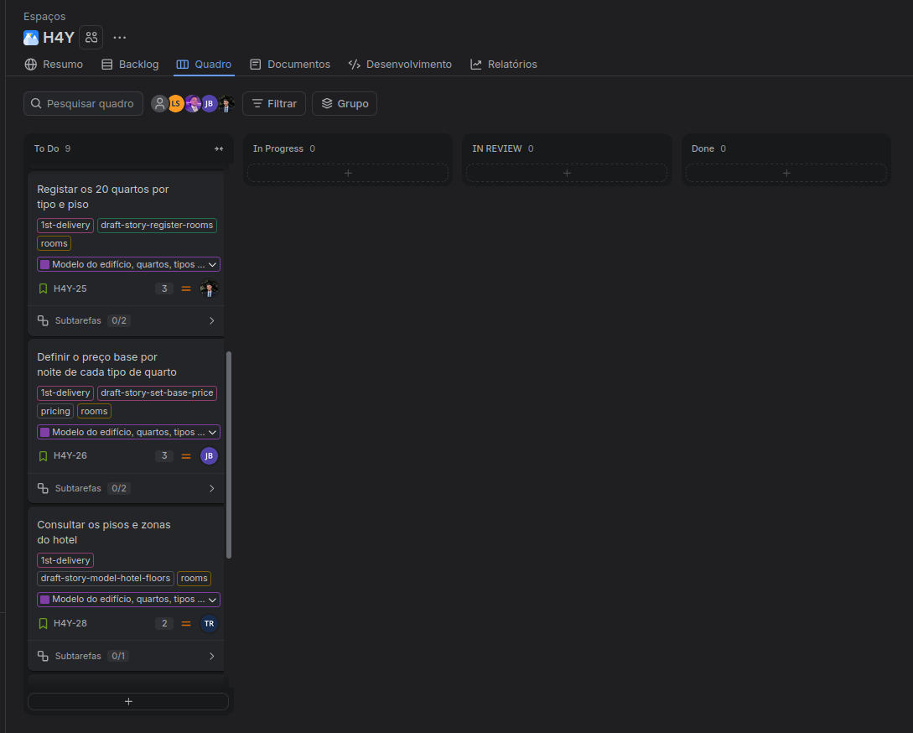
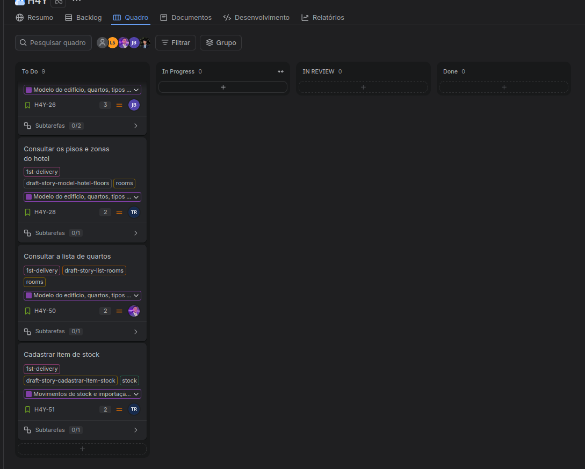

| Preparação | Reunião | Acompanhamento |
|---|---|---|
| - Rever o backlog e a ordem das stories - Confirmar os pontos de cada story (escala de Fibonacci) - Confirmar a disponibilidade da equipa - Verificar se o código já cobre alguma story | - Definir o sprint goal com valor para o hotel - Confirmar a capacidade (mínimo de 13 pontos) - Selecionar as stories e atribuir responsáveis - Combinar os nomes das classes novas | - Atualizar o quadro no Jira (sprint, datas e responsáveis) - Fazer o daily scrum todos os dias para verificar o andamento da sprint - Validar as stories com os testes de aceitação - Reunião de alinhamento das regras de negócio |
| Nome | Função |
|---|---|
| Lukas Sperandio | Team Leader (Scrum Master e Product Owner) e developer |
| Tiago Borja | Developer |
| Pedro Costa | Developer |
| António Martinho | Developer |
| José Cruz | Developer |
| Sprint goal | Sprint 2: o gestor inicia sessão e cria contas de funcionário. O rececionista inicia sessão e vê a janela principal com as funções do seu papel. |
|---|---|
| Pontos da história | 27 pontos planeados. 18 concluídos (H4Y-32, H4Y-20, H4Y-22, H4Y-24 e H4Y-27). 9 pontos em carry-over (H4Y-7, H4Y-8 e H4Y-9). |
| Resumo | Concluídos: fundação do projeto, login do gestor e do rececionista, janela principal e criação de contas. A retrospetiva pediu correções nos diagramas de casos de uso (H4Y-7), de sequência (H4Y-8) e de componentes (H4Y-9). Os três passam para a Sprint 3. |
| Data de início | 24/10/2026 |
|---|---|
| Data de término | 30/10/2026 |
| Sprint goal | O hotel passa a ter os seus 20 quartos e os preços por noite no sistema. A receção já consegue dizer ao cliente que quartos existem e quanto custam, e cada funcionário só usa as funções do seu papel. |
| Sprint atual | Sprint anterior | |
|---|---|---|
| Total de dias | 7 dias - 5 úteis | 7 dias - 5 úteis |
| Capacidade da equipa | 50 h (5 elementos x 10 h) | 50 h (5 elementos x 10 h) |
| Capacidade prevista | 24 pontos (13 de histórias novas, 9 de carry-over e 2 da H4Y-51) | 27 pontos planeados (previsão sem histórico). 18 concluídos. |
| Capacidade individual | 8 h por elemento | 8 h por elemento |
| Estimação | Story points na escala de Fibonacci (1, 2, 3, 5, 8, 13) | Story points na escala de Fibonacci (1, 2, 3, 5, 8, 13) |
| Risco | Mitigação |
|---|---|
| 24 pontos estão acima da velocidade da Sprint 2 (18 pontos). | 9 pontos são correções de diagramas já começados. Se a sprint atrasar, a H4Y-51 é a primeira a passar para a Sprint 4. |
| Três elementos têm uma story nova e um carry-over: Pedro (H4Y-25 e H4Y-8), António (H4Y-50 e H4Y-7) e José (H4Y-26 e H4Y-9). | As correções dos diagramas vêm primeiro. Se atrasarem, o Tiago ajuda. |
| O diagrama de classes não tem os repositórios de pisos, quartos e tipos de quarto. Duas pessoas podem criar classes parecidas. | Combinar os nomes no primeiro dia. Cada PR atualiza o código e o docs/uml juntos. |
| Quatro stories acrescentam botões ao MainController e ao main.fxml. Conflitos de merge. | Fazer merge primeiro da H4Y-61 (menu por papel). Os outros acrescentam o botão já com a regra nova. |
| A tabela rooms (H4Y-25) depende das tabelas floors (H4Y-28) e room_types (H4Y-26). | Merge cedo da H4Y-62 e da H4Y-65. Até lá, os testes usam repositórios em memória. |
| A equipa interpreta as regras de negócio de formas diferentes (retrospetiva). | Reunião de alinhamento no início da sprint. |
| Q-01 (20 quartos, 7/10/3) e Q-11 (o gestor define o preço base) não estão confirmadas pelo professor. | Perguntar na próxima aula prática. |
A coluna N.º dá a ordem de trabalho. A coluna Prior. é a prioridade do card no Jira (Alta = High, Média = Medium). Ordem: primeiro as correções pedidas pelo professor (carry-over, prioridade Alta no Jira), depois as histórias que criam a base das outras (regra por papel, pisos e tipos de quarto), depois o registo dos quartos (sprint goal). A H4Y-51 é a primeira a sair se a sprint atrasar.
| N.º | Prior. (Jira) | Chave | Item (título no quadro) | Tipo | Pontos (Fibonacci) | Responsável |
|---|---|---|---|---|---|---|
| 1 | Alta | H4Y-7 | H4Y - Criação dos Diagramas UML de Casos de Uso | Tarefa (carry-over) | 3 | António Martinho |
| 2 | Alta | H4Y-8 | H4Y - Criação dos Diagramas de Sequência | Tarefa (carry-over) | 3 | Pedro Costa |
| 3 | Alta | H4Y-9 | H4Y - Criação do Diagrama UML de Componentes | Tarefa (carry-over) | 3 | José Cruz |
| 4 | Média | H4Y-23 | Mostrar apenas as funções permitidas ao papel | História | 3 | Lukas Sperandio |
| 5 | Média | H4Y-28 | Consultar os pisos e zonas do hotel | História | 2 | Tiago Borja |
| 6 | Média | H4Y-26 | Definir o preço base por noite de cada tipo de quarto | História | 3 | José Cruz |
| 7 | Média | H4Y-25 | Registar os 20 quartos por tipo e piso | História | 3 | Pedro Costa |
| 8 | Média | H4Y-50 | Consultar a lista de quartos | História | 2 | António Martinho |
| 9 | Média | H4Y-51 | Cadastrar item de stock | História | 2 | Tiago Borja |
| Total | 24 |
| Chave | Subtarefa (título no quadro) | Item pai | Responsável |
|---|---|---|---|
| H4Y-60 | 23.1 Serviço: regra de funções por papel no HotelFacade e testes | H4Y-23 | Lukas Sperandio |
| H4Y-61 | 23.2 Ecrã: menu da janela principal usa a regra por papel e pede login sem sessão | H4Y-23 | Lukas Sperandio |
| H4Y-62 | 28.1 Consultar pisos e zonas: repositório, serviço, ecrã e testes | H4Y-28 | Tiago Borja |
| H4Y-65 | 26.1 Serviço: RoomService.setBasePrice, validação, papel e testes | H4Y-26 | José Cruz |
| H4Y-66 | 26.2 Ecrã: tabela de tipos de quarto com o preço base editável | H4Y-26 | José Cruz |
| H4Y-63 | 25.1 Serviço: RoomService.saveRoom, repositório de quartos, regras de piso e testes | H4Y-25 | Pedro Costa |
| H4Y-64 | 25.2 Ecrã: rooms.fxml e RoomController para registar quartos | H4Y-25 | Pedro Costa |
| H4Y-67 | 50.1 Lista de quartos: serviço, ecrã com filtro por tipo e botão do rececionista | H4Y-50 | António Martinho |
| H4Y-68 | 51.1 Cadastrar item de stock: StockService.createItem, ecrã e testes | H4Y-51 | Tiago Borja |
| H4Y-7, H4Y-8, H4Y-9 | Sem subtarefas. As correções pedidas estão na descrição de cada card. | - | - |


